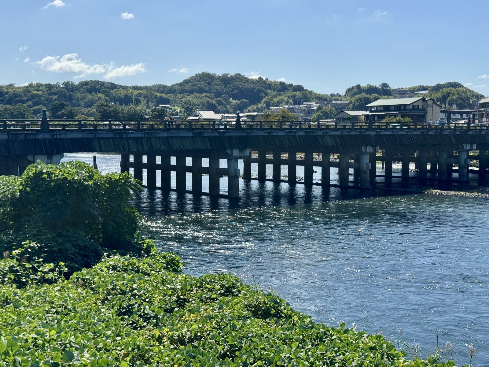
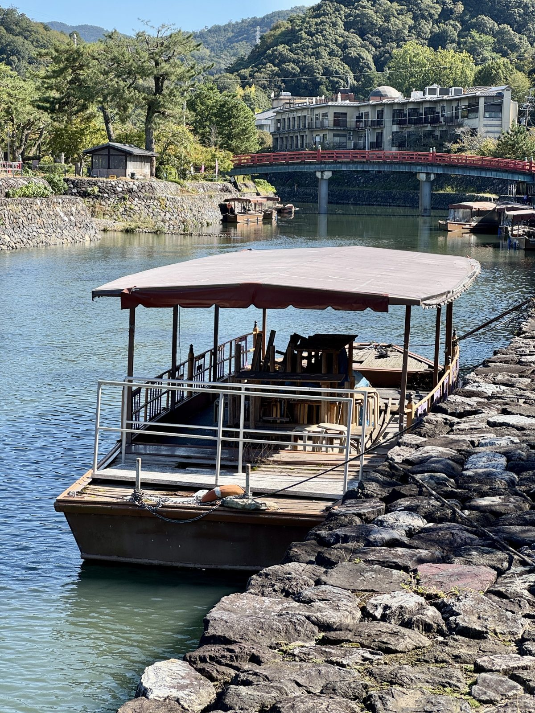
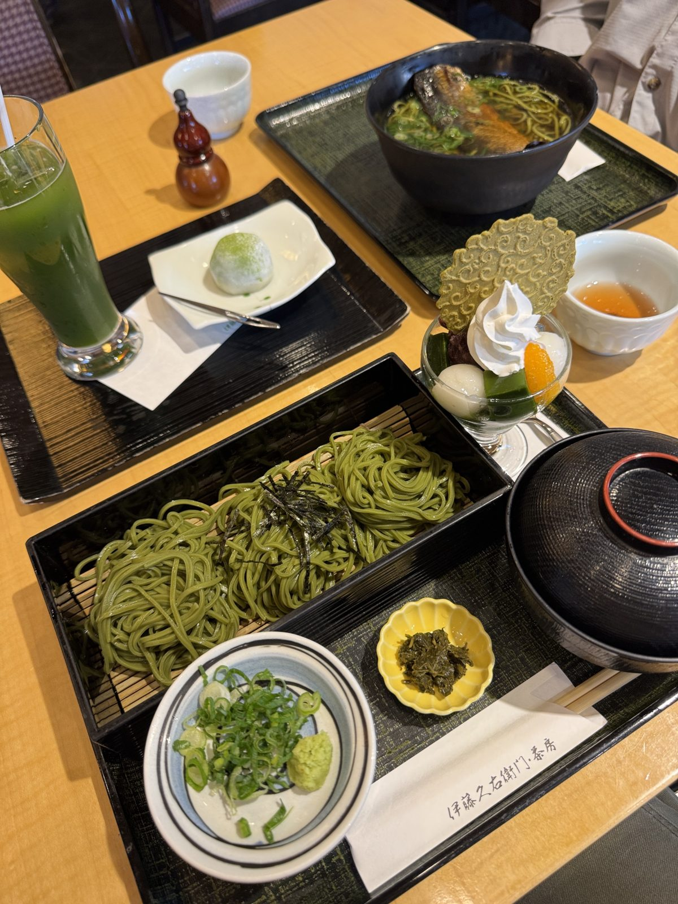
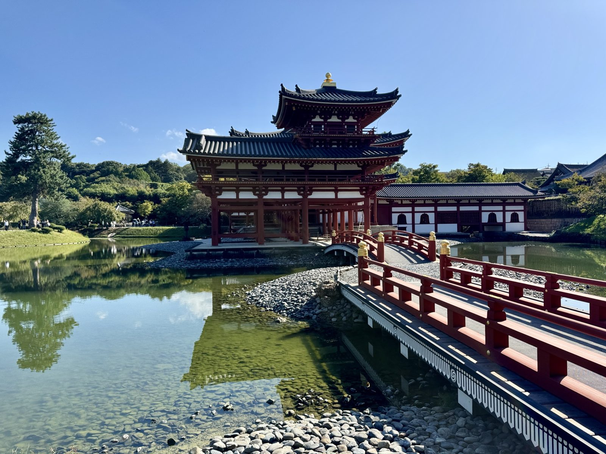
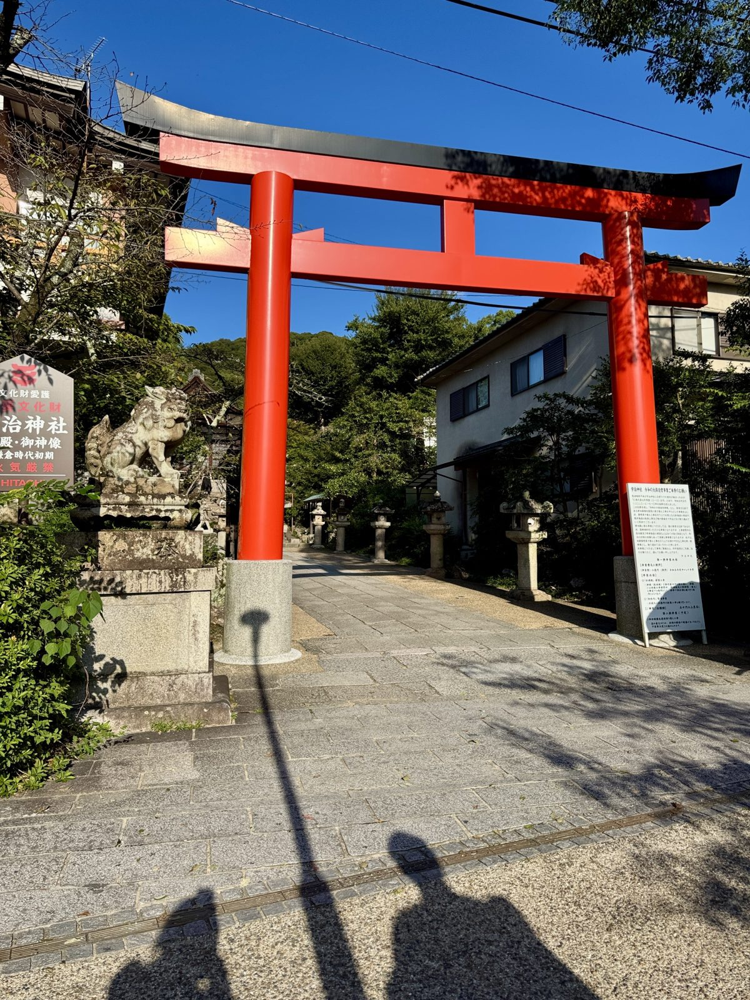
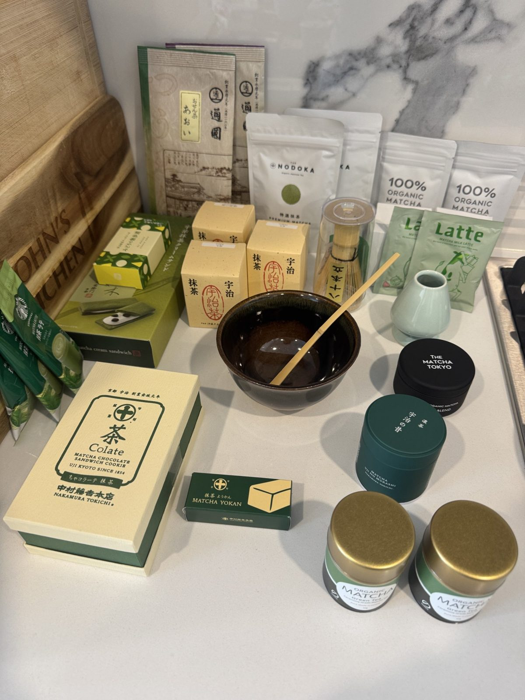
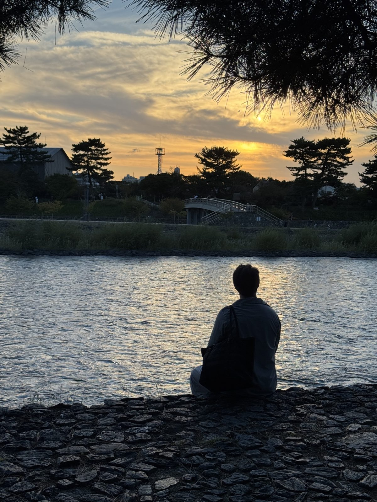
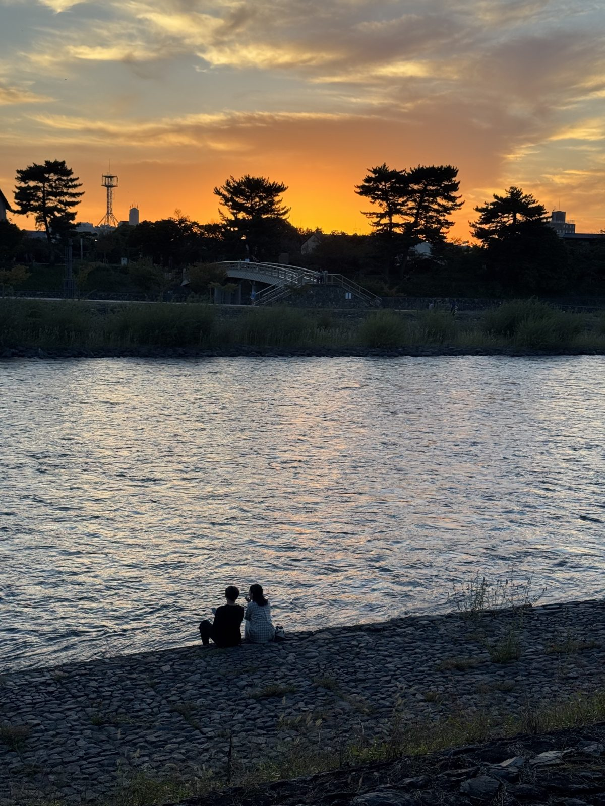

Uji: The Home of Matcha and a Calmer Side of Kyoto

Uji Bridge over the Uji River
Just a short train ride from Kyoto, Uji is famous for growing some of the finest matcha in Japan, and it ended up being one of the highlights of our autumn trip. We packed a lot into one day, yet it never felt rushed. With fewer crowds, a beautiful river and green hills all around, Uji had a calm, easygoing feel that made it a joy to explore.
Getting there: From Kyoto Station, the JR Nara Line takes about 20 minutes to Uji Station on a rapid train. You can also take the Keihan line to Keihan-Uji Station, which is handy if you're staying near Gion. Both stations are close to the river.
A slow wander by the Uji River
Our first stop, straight off the train, was Tsuen, a tea shop right at the end of Uji Bridge. Founded in 1160, it's said to be the oldest tea shop in Japan, and it's still run by the same family today, making it one of the most recommended places in Uji to buy matcha. We bought some tea and matcha to bring home, and treated ourselves to a matcha ice cream cone, the best I had in all of Japan, rich, creamy and full of matcha flavour.
From there, we set off on a slow, relaxed wander along the Uji River. Clear water flowed past green hills, quiet stone paths followed the banks, and bright red bridges led across to little islands in the river. By one of the red bridges, we came across a row of traditional wooden boats used for ukai, an ancient way of fishing with trained cormorant birds that goes back more than 1,000 years. In summer, you can watch it at night by firelight, so I'd love to come back and see it one day.

Cormorant fishing boats by the red bridge
Lunch at a matcha tea house
Matcha is everywhere in Uji, so we made the most of it! For lunch, we headed to Ito Kyuemon, a much-loved Uji tea maker dating back to 1832. I ordered chilled green tea soba noodles with a little matcha parfait, and John had hot green tea soba topped with fish. We also shared an iced matcha drink and some matcha mochi, all fresh and full of flavour. Their shop is a great place to stock up, so we picked up some matcha powder and a box of their matcha biscuits too.

Our green tea soba lunch at Ito Kyuemon
Byodo-in and the Phoenix Hall
After lunch, we made our way to Byodo-in, a UNESCO World Heritage Site and Uji's most famous sight. Its Phoenix Hall was built in 1053 and sits beside a calm pond, so on a still day it reflects beautifully in the water. You might recognise it, as it appears on Japan's 10 yen coin. We wandered the gardens and admired its graceful curved roofs, with a bronze phoenix perched at each end.

The Phoenix Hall at Byodo-in
We also explored the museum, which is filled with Buddhist sculptures and treasures from the temple's long history, before browsing the gift shop on our way out.
Byodo-in is also where I got my very first goshuin, a hand-written record of your visit, beautifully brushed in calligraphy by the temple staff and finished with a red seal. Goshuin are collected in a special book called a goshuincho, which you can buy at many Buddhist temples and Shinto shrines, and you pay a small fee for each one. Many temples and shrines also offer stamps, some free and some for a small fee, which go in a regular stamp book. Because goshuin are seen as sacred, they won't be written in a book filled with other stamps, so I travelled with two books, my goshuincho just for goshuin, and a separate stamp book for all the other stamps I collected along the way. Each goshuin is a little work of art.
Uji Shrine and its lucky rabbits
From there, we crossed back over the river to Uji Shrine, a small Shinto shrine tucked among the trees. Legend says a rabbit once guided a prince here, so rabbits feature all over the grounds. Unlike the busier, more famous temples and shrines we'd visited, there were only a few other people around, and it was the most peaceful and present I felt at any shrine on our trip. Without the crowds, we could take our time making an offering and saying a prayer, and really soak in the quiet atmosphere. Before leaving, we bought some little good-fortune rabbits to take home.

The torii gate at Uji Shrine
Matcha shopping and sunset on the river
Afterwards, we wandered through Uji's main shopping streets, lined with tea shops selling everything from matcha powder and loose-leaf tea to matcha sweets. We picked up even more matcha to bring home, along with some matcha cookies, which became our favourite matcha treat of the whole trip, and grabbed a cold Yamanashi plum chuhai for later.

Our matcha haul from Uji
To end the day, we strolled back along the river and found a nice spot on the stone riverbank to sit, take in the views and watch the sunset with our drinks. The sky turned gold, then a deep orange behind the trees and the arched bridge. Just before the sun disappeared, I captured a sweet moment of a lovely young couple at the water's edge, taking in the sunset just like we were. When I went over to show them and offered to share it, they loved it, so I sent them a copy to keep. It was such a lovely end to a beautiful day.

John watching the sunset by the Uji River

A young couple at the water's edge at sunset
My verdict
Kyoto is beautiful and full of incredible sights, and Uji makes a wonderful addition to any Kyoto trip. Just a short train ride away, it offers a quieter, more peaceful side of the area, with beautiful riverside scenery and delicious matcha everywhere we turned. If you're after a calmer experience, or only have time for one day trip, I'd recommend Uji. Away from the queues and crowds, we could really slow down and take our time, and it ended up being one of our favourite days in Japan.
Best for: matcha lovers, temples and a slower day away from the crowds.
Top tip: stay for sunset on the riverbank!